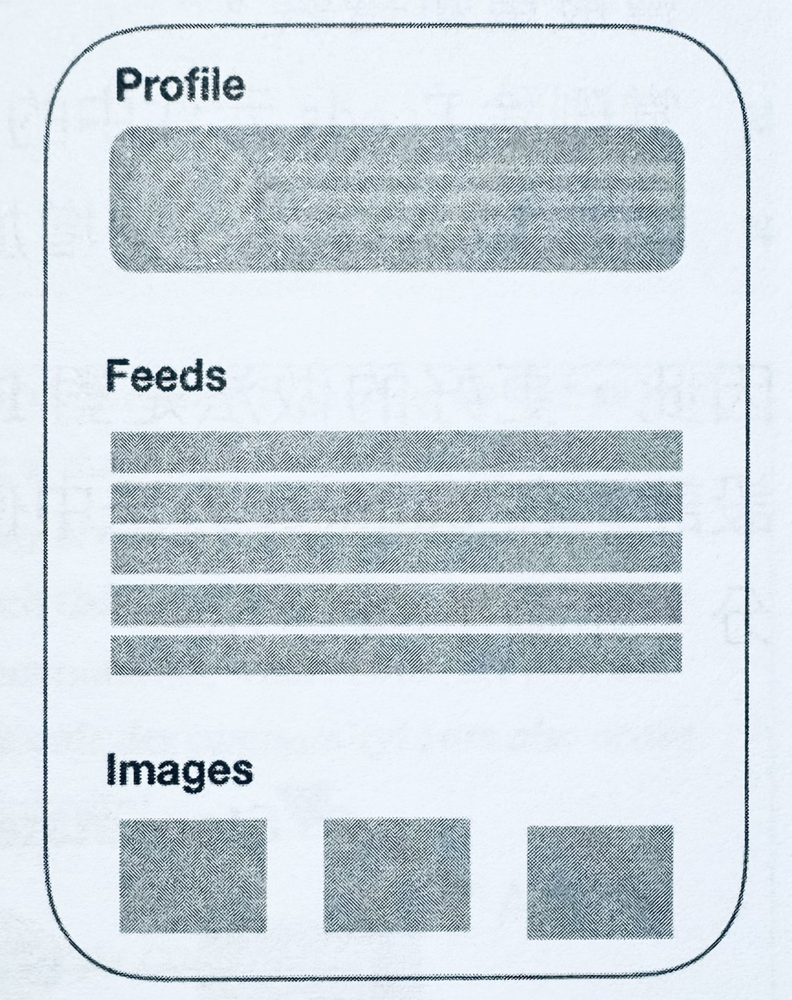
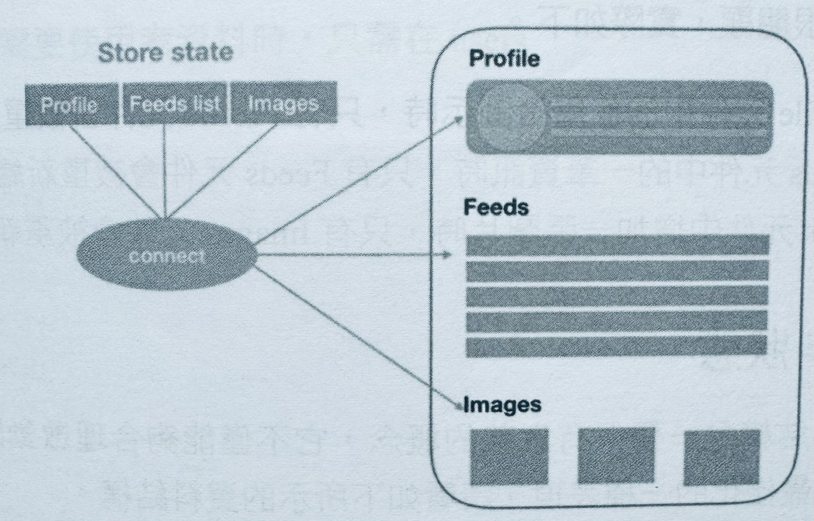
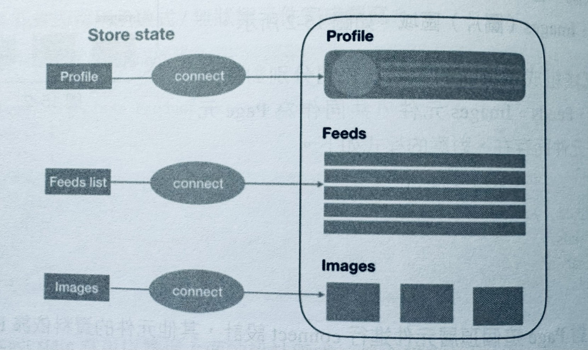

1-6-3 React: 資料狀態管理
為什麼需要資料狀態管理，資料狀態管理到底在解決什麼樣的問題？這其實是架構、元件化帶來的概念。還是舉先前案例：在一個頁面上，點擊其中一處「訂閱」按鈕後，真面中的其他「訂閱」按鈕也會切換為「已訂閱」狀態。如果沒有資料狀態，也許就需要用以下方式來實現訂閱需求。
const btnEle1 = $('#btn1')
const btnEle2 = $('#btn2')
btnEle1.on('click', () => {
if(btnEle1.textContent ==='已訂閱'){
return
}
btnEle1.textContent ='已訂閱'
btnEle2.textContent ='已訂閱'
})
btnEle2.on('click', () => {
if(btnEle2.textContent ==='已訂閱'){
return
}
btnEle1.textContent ='已訂閱'
btnEle2.textContent ='已訂閱'
})
這只是兩個按鈕的情況，處理起來就非常混亂了，而且難以維護，在這種情況下非常容易滋生 bug。
現代化的架構解決這個問題的想法是元件化，元件依賴資料，對應這個場景的資料狀態的程式如下。
hasMarked: false / true
根據 hasMarked 這個狀態值，所有的訂閱元件都可以回應正確的視圖操作。把麵條式的程式轉換成可維護的程式後，對資料的管理就成了重中之重，這就是資料狀態的雛形。但是，一旦資料量越來越大，如何與元件形成良好的互動就是一種學問了。舉例來說，要考慮以下情況。
- 一個元件需要和另一個元件共用狀態。
- 一個元件需要改變另一個元件的狀態。
以 React 為例，其他架構類似，如果 React 自己來維護這些資料，則資料狀態就是一個物件，並且這個物件在元件之間要互相修改，極其混亂。
要考慮一個問題：hasMarked 這種資料到底是應該放在 state中維護，還是應該借助資料狀態管理類別庫，如 Redux，來維護呢？至少這樣一來，資料來源是單一的，資料狀態和元件是解耦的，也更加方便開發者進行偵錯和擴充資料。
以 React 的state 和Redux為例，來分析一下「資料由誰來維護」的問題。
React 的 state 是在元件內部維護的資料，當某項 state 需要與其他元件共用時，我們就可以透過 props 來完成元件間的通訊。從實作上來看，這就需要相對頂層的元件維護共用的 state 並提供修改此項 state 的方法。state 本身和修改方法都需要透過 props 傳遞給子孫元件。
使用 Redux 的時候，在 Redux store 中維護資料。任何需要存取並更新資料的元件都需要連線 Redux，完成對 Redux store 的訂閱，這通常借助容器元件來完成。Redux 對資料採用集中管理的方式。
從資料持久度、資料消費範圍的角度來回答這個問題。首先，在資料持久度上，不同狀態的資料大致可以分為以下3大類。
- 快速變更型：這種資料在應用中代表了某些原子等級的資訊，且顯著特點是變更頻率最快。舉例來說，一個文字輸入框中的資料值可能會隨著使用者輸入在短時間內持續發生變化。這種資料顯然更適合在 React 元件內維護。
- 中等持續型：在使用者瀏覽或使用應用時，這種資料常常會在頁面更新前保持穩定。舉例來說，從非同步請求介面透過 AJAX方式得來的資料，或使用者在個人中心頁編輯提交的資料。這種資料較為通用，也許會被不同元件所使用。資料在 Redux store 中維護，並透過 connect 方法和元件進行連接，是一種不錯的選擇。
- 長遠穩定型：指在頁面多次更新或多次存取期間都保持不變的資料。因為 Redux store 會在每次真面掛載後都重新產生一份新的資料，因此這種類型的資料顯然應該儲存在Redux以外的地方，如伺服器端資料庫或瀏覽器的本機存放區。
即資料消費範圍上來分析。資料特性表現在消費層面，即有多少元件需要使用。我們以此來區分 Rcact 和 Redux 的不同分工。 廣義上，需要消費同一種資料的元件越多，在 Redux store 中維護這種資料就越合理；反之，如果某種資料與其他資料隔離，只服務於應用中某單一部分，那麼由 React 維護更加合理。
實際來看，共用的資料應該存在於 React 的高層元件中，由此在低層元件一層層傳遞。如果在 props 傳遞深度上只需要一兩個層級就能滿足消費資料的元件需求，那麼這樣的跨度是可以接受的；反之，如果跨越層級很多，那麼連結到的所有中間層級的元件就都需要進行接力賽式的傳遞，這樣顯然會增加很 多乏味的傳遞程式，也破壞了中間元件的重複使用性。這時，使用Redlx維護共用狀態，合理設定容器元件，透過 comeet來打通資料，就是一種更好的方式。
如果一些完全不存在父子關係的元件需要共用資料，舉例來說，前面提到過的真面需要在多處展示使用者圖示，那麼常常會造成資料輻射分散的問題，對於React 模式的狀態管理十分不利。在這種場景下，使用 Redux 同樣是更好的選擇。
如果應用有追蹤狀態的功能，舉例來說，需要完成「重放」「返回」或 "Redo/Undo" 等需求，那麽使用 Redux 無疑是最佳選擇，因為 Redux 天生擅長於此：每一個 action 都描述了資料狀態的改變和更新，非常便於進行資料的集中管理。
Redux 可以被任何一個資料管理類別庫所取代。
Redux使用方式
先上模板
<ShoppingApp>
<Header />
<SideMenu />
<ProductsContainer>
</ProductsContainer>
</ShoppingApp>
ProductsContainer 元件負責繪製每一個商品項目。
import Product from './Product'
export default class ProductsContainer extends Component {
constructor (props) {
super(props);
this.state = {
products: [
'商品1',
'商品2',
'商品3'
]
}
}
renderProducts () {
return this.state.products.map((product) => {
return Product 元件作為 UI 元件/展示元件，負責接收資料、展示資料。這樣一來，Product 元件即可用函數式/無狀態元件完成撰寫。
import React, { Component } from 'react'
export default class Product extends Component {
render(){
return (
{this.props.name}
)
}
}
使用 React state 就可以實現上面的設計需求，且合理高效。
但是，如果商品有「立即購買」按鈕，點擊「立即購買」後會將商品加入購物車（對應上面 Cart Info 部分），這時需要注意，購物車中的商品資訊會在多個頁面（如下所示）被消費。
- 右上角需要展示購物車中商品數目的目前頁面
- 購物車頁面本身
- 支付前的確認頁面
- 支付頁面
這就是單頁面應用需要對資料狀態進行管理的訊號。我們可以維護一個cartList陣列以供應用消費，這個陣列放在 Redux 或 Vuex 中都是可行的。
合理的 connect 場景
在使用 Redux時，我們可以搭配 React-Redux 這個類別庫來聯通（connect）元件和資料，但是容易陷入的常見錯誤就是濫用 connect ，而沒有進行更合理的設計分析，或只在頂層進行 connect 設計，然後需要一層一層地進行資料傳遞。
舉例來說，在一個頁面中存在 Profile、Feeds（資訊流）、Images（圖片）區域，如下圖
這些區域組成了頁面的主體，它們分別對應於 Profile、Feeds、Images 元件，共同作為 Page 元件的子元件而存在，對應的程式如下。
<Page>
<Profile/>
<Feeds/ >
<Images/>
</Page>
如果只對 Page 這個頂層元件進行 connect 設計，其他元件的資料依靠 Page 元件進行分發，則設計如下圖所示
這樣做存在的問題如下
- 當改動 Profile 元件中的使用者圖示時，由於資料變動，整個Page 元件都會被重新繪製。
- 當刪除 Feeds 元件中的一筆資訊時，整個 Page 元件也都會被重新繪製。
- 當在 Images 元件中增加一張圖片時，整個 Page元件同樣都會被重新繪製。
因此，更好的做法是對 Profile、Feeds、Images 這3個元件分別進行 connect 設計，在 connect 方法中使用 mapState ToProps 篩選出不同元件關心的 state 部分，如圖
這樣做的好處很明顯，實際如下。
- 當改動 Profile 元件中的使用者圖示時，只有 Profile 元件會被重新繪製。
- 當刪除 Feeds 元件中的一筆資訊時，只有Feeds元件會被重新繪製。
- 當在 Images 元件中增加一張圖片時，只有Images 元件會被重新繪製。
扁平化資料狀態
扁平化的資料結構是一個很有意義的概念，它不僅能夠合理啟動開發邏輯，同時也是效能最佳化的一種表現。請看如下所示的資料結構。
{
articles:[{
comments: [{
authors: [{
}]
}]
}],
// ...
}
這是一個文章列表加文章評論互動的場景，其對應於3個元件：Article、Comment 和Author。這樣的真面設計比比皆是，如下圖
按照上述資料結構，可以想像，reducer 函數的相關資料處理就很棘手了。如果 articles[2].comments[4].authors1 發生了變化，那麼想要傳回更新後的狀態，並確保不可變性，操作起來就沒有那麼簡單了，我們需要對深層物件結構進行拷貝或遞迴。
因此，更好的資料結構設計一定是扁平化的，我們可以對 articles、comments、authors 進行扁平化處理，舉例來說，使 comments 陣列不再儲存 authors 資料，而是記錄 userId 評論內容中需要使用者資料時，只需在 users 陣列中按照 userId 進行分析即可。
{
articles: [{
// ...
]},
comments: [{
articleId:''
userId: '',
}],
users: [{
// ...
}]
}
不同元件只需要關心不同的資料片段，舉例來說 Comment 元件只關心 comments 陳列 Author 元件只關心 users 陣列。這樣不僅操作更合理，而目能有效減少繪製壓力。
Redux 優缺點
歸納一下，Redux的限制主要表現在以下5個方面:
- Redux帶來了函數式程式設計、不可變性思懇等，為了配合這些理念，開發者必須要寫很多「模式程式」（boilerplate），繁瑣及重複是開發者不願意容忍的。當然，也有很多巧妙的方法旨在減少 boilerplate，但目前來看，可以說Redux 天生就帶有繁瑣的基因。
- 使用 Redux時，應用需要使用 objects或 arrays 描述狀態。
- 使用 Redux時，應用需要使用 plain objects 及 actions 來描述變化。
- 使用 Redux時，應用需要使用純函數去處理變化。
- 要將應用中的很多狀態抽象到 store，不能痛痛快快地寫業務程式，出現一個變化就要撰寫對應的 action（action creator）、reducer 等。
和響應式結合函數式的 Mobx相比，這些缺點使 Redux 的程式設計體驗大打折扣。
為了彌補這些缺點，社區開啟了一輪又一輪的嘗試，其中一個努力方向是基於 Redlx封裝一整套上層解決方案，這個方向上的成果以Redux-sage、Dia、Rematch 類別庫或架構為主。
下面歸納一下這些解決方案的特點和想法。
1. 簡化初始化過程
傳統的 Redux 初始化充滿了一些巧妙的方法，過於函數式，且較為繁瑣，程式如下
import {createstore, applyMiddleware, compose } from 'redux'
import thunk from 'redux-thunk'
import rootReducer from 'reducers'
const initialState = {
// ...
}
const store = initialState => createStore (
rootReducer, initialState, compose(
applyiddleware(thunk),
// ....
)
)
這裡只應用了一個中介軟體，還沒有涉及 devtool 的設定，它類似 Dva 的 Redux 代替品，採用物件導向式的初始化設定。
2. 簡化 reducer
傳統的 reducer 可能需要撰寫惱人的switch.case 或很多樣板程式，而以Redux 為基礎的上層解決方案對 reducer 邏輯進行了封裝，以便使用起來能夠更加簡潔高效。
const reducer = {
ACTIONTYPE1:(state, action) => newState,
ACTIONTYPE2:(state, action) => newState,
}
3. 帶請求的副作用
Redux 一般需要使用 thunk 中介軟體來處理網路請求，它的原理是：首先傳遞一個action，但是這個 action 不是 plain object 類型，而是一個函數；thunk 中介軟體發現 action type 為函數類型時，會把 dispatch和 getState 等方法作為參數傳遞給函數進行副作用邏輯。
如果不是React、Redux 的開發者：如許很那看懂上面一段描述，這也是 Redux 處理含有副作用的邏輯較為複雜的表現，更上層的解決方案 Redux-saga 採用 Generator（產生）的思想或 async/await 處理副作用，無疑更加人性化合理。
為了更進一步地配合產生器方案，上層方案將 action 分為普通 action 和副作用 action，開發者使用起來也更加清晰。
4. 將 reducer 和 action 合併
為了進一步減少模式程式，一個通用的做法是在 Redux 之上，將 reducer 和 action 宣告合併，這樣可以使宣告一步合格，如下所示
const store = {
state: {
count: 0,
state1: {}
},
reduers: {
action1:(state, action) => newState,
action2:(state, action) => newState
}
}
這裡定義了兩個 action:action1 和 action2。它們出自 store.reducers 的鍵名，而對應鍵值即 reducer 邏輯。
這些都是以 Redux 為基礎進行封裝的上層解決方案的基本思想，了解了這些，就不會再對 Dva、Redux-saga 的原理感到陌生了
理清了資料狀態管理的意義，簡化了資料管理的操作後，還要分析到底應該如何組織資料。
經過整理，基本已經確定開發者真正的核心訴求只是：方便地修改資料，方便地取得資料。僅此而已
新的發展趨勢：Mobx
對核心訴求申的修改資料來說，Redux 建議以函數式、不可獲性、資料扁平化的形式進行；而其中的取得資料說到底是依賴發佈/訂閱模式進行的。相對地，Mobx是物件導向和響應式的結合，它的資料來源是可變的，對資料的觀察是響應式的。下面來看一段用Mobx 處理資料的程式範例。
const foo = observable ({
a:1,
b: 2
})
autoRun(()=>{
console.log (foo.)
})
foo.b= 3 // 沒有任何輸出
foo.a= 2 // 輸出:2
用 Mobx 處理資料原理是資料綁架/資料代理 。將上面的程式改為以下形式。
const state = observable ({
state1: {}
})
autoRun(()=>｛
return (當修改state state1 時，將觸發 autoRun 的回呼，引起元件的重新繪數。不同於 Redux，這就是另一種流派 Mobx 的核心理念。
不管是 Redux 還是 Mobx，它們都做到了：元件可以讀取 state，修改state，且在有新 state 時更新。這裡的 state 都是單一資料來源，只不過修改 state 的方式不同。更進一步地說，Mobx 透過將物件和陣列包裝為可觀察物件，隱藏了大部分樣板程式，比 Redux 更加簡潔，更像是進行了雙向綁定。
在資料狀態不太複雜的情況下：使用 Mobx也許更加簡潔高效：但是如果資料狀態非常複雜，或你是函數式式設計的粉絲，則可以考慮使用 Redux ，當需要在 Redux 層面上進行封裝時，使用像 Dva 這樣的方案：是一個明智的選擇。